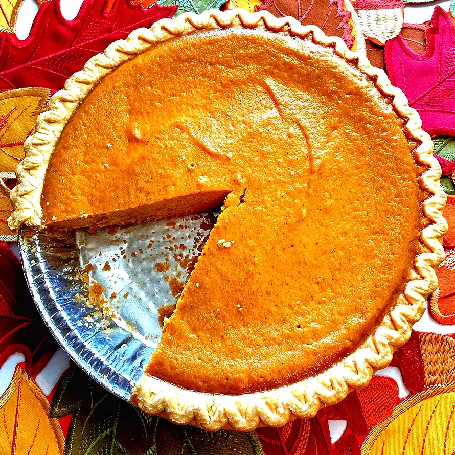

Pie

"Easy as pie" is just the case with this pie recipe.
- 2 eggs
- 1 (16 ounce) can pumpkin puree
- 1 (14 ounce) can sweetened condensed milk
- 1 teaspoon pumpkin pie spice
- 1 (9 inch) unbaked pie crust
- Preheat the oven to 425 degrees F (220 degrees C).
- Combine eggs, pumpkin puree, sweetened condensed milk, and pumpkin pie spice in a large bowl and mix until combined.
- Fit pie crust into a 9-inch pie dish; pour pumpkin mixture into the crust.
- Place pie on a baking sheet and bake in the preheated oven for 15 minutes. Reduce heat to 350 degrees F (175 degrees C) and bake until filling is set, 35 to 40 minutes.